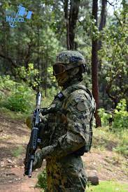

Preliminar (Cabos).
Intermedio (Tercer Maestre).
Avanzado (Segundo Maestre).
Básico de Oficiales (Teniente de Corbeta).
Avanzado de Oficiales (Teniente de Fragata).
Datos Curiosos: El examen fisico incluye pruebas de resistencia, equilibrio, coordinacion y natacion, entre otras.
El rango mas bajo en el escalafon de la SEMAR es el de Marinero.
Pagan sueldos mensuales de 24,000 pesos.
El examen psicologico se basa en una entrevista de un psicologomilitar o un oficial de reclutamiento.
Veneficios que tienen los Infantes de Marina:
Casa Habitacion en renta.
Periodos vacacionales y otorgamiento de licencias ordinarias.
Pension para los derechoambiente en caso de muerte del militar.
Servicos turisticos realizados mediante convenios con sociedades civiles y otras dependencias federales.